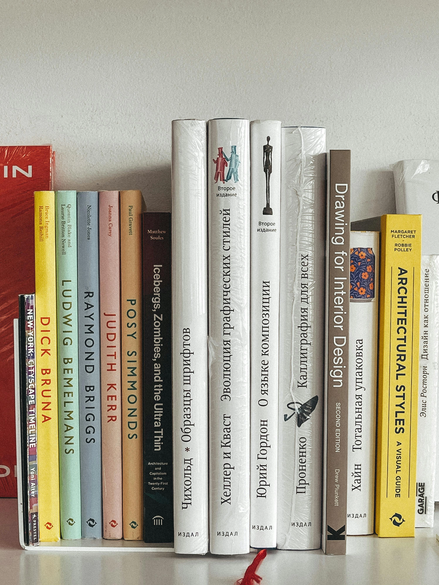

Rigor.
Estructura.
Diseño.
Carlos Romera. 25 años de disciplina industrial aplicados a la maquetación editorial y el desarrollo de aplicaciones web.
Cómo entiendo el diseño y el desarrollo
"Entiendo la web como una extensión de la maquetación editorial: un ejercicio de
orden y jerarquía."
Experiencia aplicada a proyectos reales
Freelance
Maquetación de proyectos educativos complejos en colaboración con empresas como McGraw Hill.

Romera Creativos
Gestión de soluciones digitales integrales y arquitecturas robustas.
Desarrollos propios y experimentación técnica
🏦 Banco Jones
Simulador financiero interactivo: préstamos, inversiones y ahorros con cálculos en tiempo real.
◢ Brutalismo Web
Landing page de inspiración brutalista. Tipografía audaz,网格 crudo, jerarquía visual contundente y ausencia de ornamentación.
Evolución de mi formación
JavaScript, PHP y MySQL orientados a producto
JavaScript / PHP / MySQL / APIs
Profundización en desarrollo full‑stack para construir aplicaciones web completas.
Maquetación y estructura para la web
HTML5 / CSS3 / Responsive
Construcción, integración de componentes y publicación de sitios web.
Especialización práctica en Adobe Creative Suite
InDesign / Photoshop / Illustrator
Aplicando criterios de maquetación editorial y jerarquía tipográfica.
Rigor industrial aplicado al código
Haber liderado proyectos complejos durante 25 años en el sector industrial es la base de mi rigor y acabado impecable.